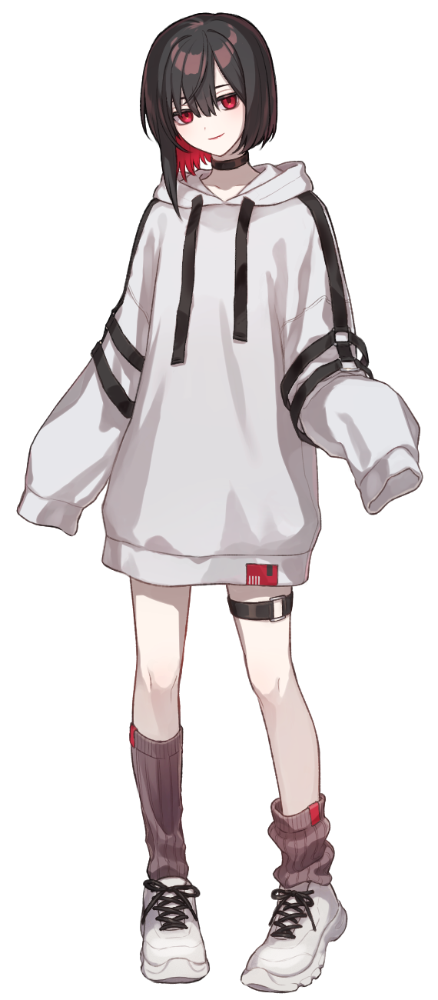

からかい上手の後輩
明人のことを「探偵さん」と呼び、軽口やいたずらで周囲を振り回す。
後輩／対人洞察を活かす仲間
くろせ あかね Kurose Akane
「探偵さんなら、これくらい余裕でしょ？」
軽口の向こうに、人の本音を見抜く視線がある。

明るく生意気で、いたずら好きな後輩。
小悪魔的な言動で周囲を振り回し、とりわけ美原明人のことを「探偵さん」と呼んで頻繁にからかっている。
学業成績は平均的だが、地頭がよく、人の嘘や言葉の裏にある感情を見抜くことに長けている。
一見すると誰にでも物怖じしない少女だが、相手によって距離感が変わり、時には素っ気ない態度を見せることも。
ある日、周囲の人々が突然別人のように振る舞い始めたことを不審に思い、不可解な事件を調べているという明人たちの噂を聞きつけて相談を持ちかける。
明人のことを「探偵さん」と呼び、軽口やいたずらで周囲を振り回す。
成績だけでは測れない頭の回転の速さを持ち、言葉と態度に潜む嘘や感情を察する。
明るく物怖じしない一方で、人によっては距離を置き、素っ気なく接することもある。
明人を「探偵さん」と呼んでからかい、不可解な出来事について自ら相談を持ちかける。彼女の鋭い対人洞察は、証言や相手の態度を調べる場面でも役立つ。